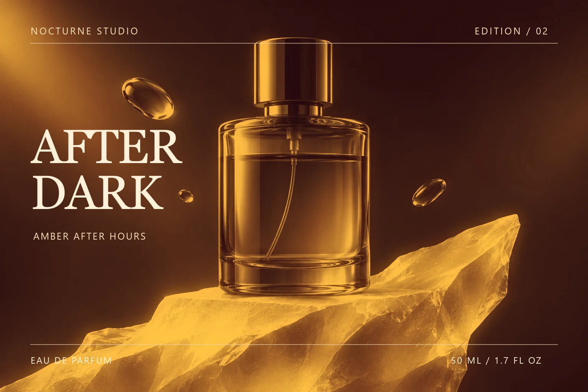

PRODUCT / THE WORKBENCHES
创作工作台
从一条时间线、一张图层，到一整面 AI 制片画布。选一个工作台，直接试试演示。
01 / VIDEO EDITING
把节奏
放上时间线。
在多轨时间线上组织画面、音频和字幕。精剪单条作品，也能为同一批素材组合多个版本。
- 多轨剪辑与预览
- 字幕编辑与翻译
- 批量混剪与导出
1080p
02 / IMAGE DESIGN
每一层，
都有余地。
分开处理主体、文字和背景。先打磨一套版式，再把它应用到一批图片上。
- 图层、分组与文字排版
- 裁剪、画笔与效果调整
- 模板批量出图
原始素材

小欢pro导出03 / AI PRODUCTION
让灵感
连成一条线。
把参考素材、提示词和生成结果放在同一张画布上，理清创意，再将可用素材交给后续制作。
- 节点式制片画布
- 组织参考图与提示词
- 图片、视频生成与结果管理
生成结果 · AI 延续参考图的玻璃轮廓和紫光，把摄影棚里的雕塑变成峡谷传送门。
查看成图 ↗AVAILABLE FOR WINDOWS